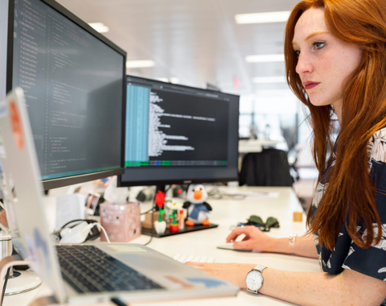

Mulheres e games: de jogadoras a desenvolvedoras?
Meninas e mulheres representam metade do público dos games, mas são claramente uma minoria no desenvolvimento desses jogos digitais. O projeto "Sheroes in games", que tem a participação do Brasil, quer mudar isso.
Quem são as personagens de videogames? As mulheres são representadas como "superficiais", preocupadas apenas com sua imagem e aparência? Aparecem como vítimas submissas que precisam ser resgatadas por um herói masculino? Que estereótipos são reproduzidos? E quem pensa e produz esses jogos?
Ler mais

/i.s3.glbimg.com/v1/AUTH_bc8228b6673f488aa253bbcb03c80ec5/internal_photos/bs/2023/n/h/64DzkHTNS7MUBBHQhuYA/potter-cs-summit-6.jpg)